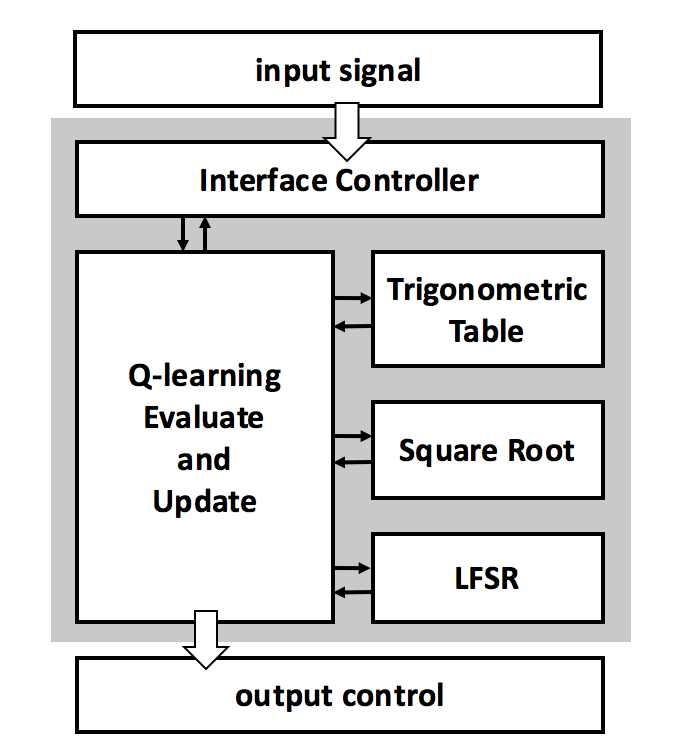

|
Jung-Chun Liu I am a research assistant with Professor Shao-Hua Sun at NTU Robot Learning Lab. Previously, I received my M.S. degree from National Taiwan University, where I was advised by Professor Tian-Li Yu at Taiwan Evolutionary Intelligence Laboratory. I received my B.S. degree with double majors in Electrical Engineering and Psychology from National Taiwan University in 2021. This is my academic website. For my personal website, please visit here. Email / CV / Google Scholar |

|
ResearchI have always been interested in understanding intelligence, both in humans and in machines. My curiosity centers on the intricacies of reasoning and decision-making, as well as crafting a cognitive architecture that articulates these abilities. My previous work resides at the nexus of computer science and cognitive science, covering areas such as reinforcement learning, symbolic AI, collective behavior model and workload assessment. Representative papers are highlighted. |
|
|
Integrating Planning and Deep Reinforcement Learning via Automatic Induction of Task Substructures
Jung-Chun Liu, Chi-Hsien Chang, Shao-Hua Sun, Tian-Li Yu Under review We propose a framework that integrates DRL with classical planning by automatically inducing task structures and substructures from a few demonstrations. We adopt genetic programming where the program model reflects prior domain knowledge of effect rules. |
|
|
GP with Ranging-Binding Technique for Symbolic Regression
Wen-Zhong Fang, Chi-Hsien Chang, Jung-Chun Liu, Tian-Li Yu Proceedings of the Companion Conference on Genetic and Evolutionary Computation (GECCO), 2023 This paper proposes a model-based genetic programming algorithm for symbolic regression, called the ranging-binding genetic programming algorithm (RBGP). |
|


|
Multi-Robot Formation Control using Collective Behavior Model and Reinforcement Learning
Jung-Chun Liu, Tsung Te Liu IEEE International Symposium on Circuits and Systems (ISCAS), 2022 This paper presents an approach that combines swarm intelligence and reinforcement learning to realize accurate and reliable operations. An area-energy-efficient hardware architecture is proposed to perform formation control in a distributed robotic system. |
 
|
Assessing Perceptual Load and Cognitive Load by Fixation-Related Information of Eye Movements
Jung-Chun Liu, Kuei-An Li, Su-Ling Yeh, Shao-Yi Chien Sensors, 2022 We aimed to resolve the discrepancy of previous results by differentiating two kinds of mental workload (perceptual load and cognitive load) and manipulated them independently using a modified video game. We found opposite effects of the two kinds of mental workload on fixation-related parameters. |
Teaching
|
|
Special thanks to Jon Barron for the source code of this website. |